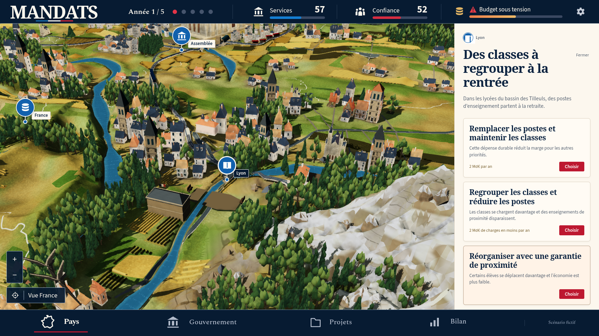
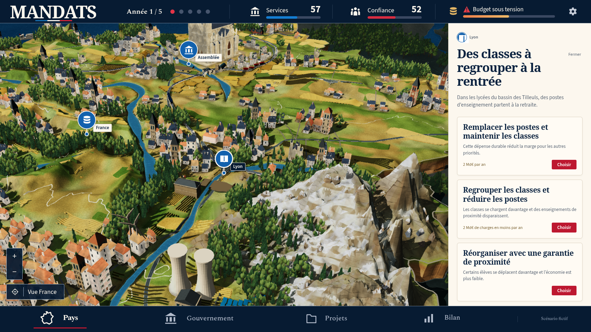

Itération 39, conformité artistique encore non atteinte
Reprise du diorama dans son ensemble
La composition reprend le relief, les forêts, les maisons et monuments, les cultures, les ports, les centrales, les trains et la mer. Les captures ci-dessous proviennent du build de production dans Chromium 154, à 1 672 × 941, DPR 1, mouvement réduit, graine 0. Elles utilisent les commandes du jeu et conservent ses vrais sujets, indicateurs et sauvegardes. Aucun marqueur du scénario fictif de la maquette n'a été ajouté.

Inspection de Lyon par le bouton du sujet. Preuve native. Le déplacement ne dépense aucune décision.
Un cran de recul depuis Lyon. Le relief reste trop anguleux, les matériaux trop uniformes et les villages moins fins que sur la référence. Preuve native.
Écarts encore observés
| Ensemble | Résultat actuel | Travail restant |
|---|
| Architecture | 774 maisons, monuments à proportions uniformes, cathédrale restaurée. | Façades et toitures encore répétitives ; finesse et silhouette du monument central à poursuivre. |
| Relief et côtes | Plis et creux intégrés au terrain, lits de falaises plus irréguliers. | Grandes parois encore planes ou anguleuses, transition entre roche et neige trop grossière. |
| Végétation et cultures | Couronnes dissymétriques, plusieurs essences, sillons en volume. | Bosquets encore en amas réguliers, campagne moins détaillée que dans la maquette. |
| Mer et équipement | Hauts-fonds et écume, pales solides, cinq ports, centrales, convois articulés et viaducs. | Richesse et placement des scènes portuaires, détails des voies et équipements à rapprocher de la référence. |
| Chargement | 17 vrais maillages de terrain précalculés ; reprise haute densité vérifiée. | L'archive ajoute 10,1 Mo. La suite 3D et le hors connexion passent ; les autres suites restent en vérification. |